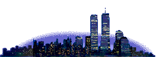

Sobre mim
- Cor favorita
- Número favorito
- Data de nascimento
- Hobbies
- Time que eu torço
- Meme favorito
- Álbuns Favoritos
- Locais Favoritos
- Coisas que eu mais odeio
- Jogos Favoritos
- Palavras Favoritas
- Músicos Favoritos
- Pintores Favoritos
- Canais Favoritos
- Filmes Favoritos
- Estilos Arquitetonicos Favoritos
Rosa Quartzo e laranja pastel
2
10/02/2005
Música Clássica, Cogumelo, Music Box, Baleias, Energia Nuclear, Comunismo, Cogumelo, Silly Cats, Internet dos anos 2000, pinturas (principalmente Ukiyo-e), cinema cult, transporte público e moda do começo do século XX.
FÚRIA (CS) e Brasil quando tem copa
Jailson Mendes/Pai de familia
Ligia Lazevi - Dois Sóis
Jaden - ERYS
Jaden - CTV3
Nero´s Day at Disneyland - From Rotting Fantasylands
Nero´s Day at Disneyland - Colonists
CCMQ, Lago dos Açorianos, MARGS, Moa Cafeteria, Café Mal Assombrado, Shibuya e Angola.
Regata, pelo (no meu corpo), Alergia, Capitalismo, Cristianismo Burgues, Israel, Influencers de direita, Gamers, Calor, Música de branco, gente que manda mensagem e depois demora pra responder, anticomunismo, batata doce, fone sem bateria e gente que não fala o que tá sentindo.
Life is Strange
Minecraft
Team Fortress 2
Civil, Trabalho, Partido, Indústria, República, Moça, Abraço.
Erik Satie
Takashi Yoshimatsu
Ernesto Nazareth
Toshifumi Hinata
Ligia Lazevi
Jaden
Franz Gordon
Villa Lobos
Michael Jackson
Rene Magritte
Utagawa Hiroshige
Monet
Piet Mondrian
Manikomio
tocadocoelho
Stackz
Bia GO
Ian Neves
Jones Manoel
Nikki Carreon
Kaike Flex
Andrezitos
Ismeiow
Gaveta
Porta dos Fundos
Caue Moura
Japão Nosso de Cada Dia
Nome Próprio (2008)
O Homem Que Copiava (2003)
Godzilla (1954)
Sherlock Holmes (2009)
Ainda Orangotangos (2007)
Brutalismo, Metabolismo, Gótico, Modernismo Socialista, Art-Deco.
